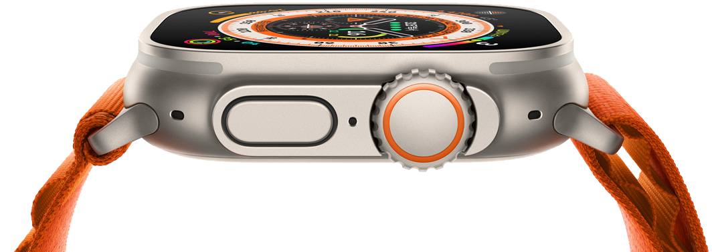
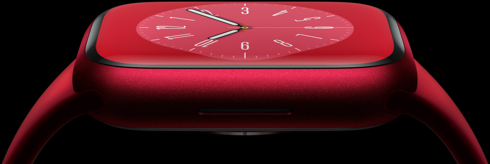
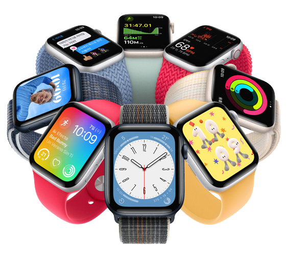

Apple
Watch
당신에게 알맞은 Apple Watch는?
appleWatch 소개
극한을 위한 극한의 기술.
보이는 것만큼 강인하다.
꿈만 같은 기능.
견고함 이상의 견고함.
더 건강한 당신을 위하여.
무사 귀환을 위해. 나침반의 재탄생. 진정 새로운 길을 여는 GPS.
땀 흘리고 싶은 이유가 가득. 운동도 자신에게 꼭 맞게. 더 건강한 당신을 위하여.
바닷속에서도 경험하는 혁신. 수영 최적화. 부담 없이 빠져들다.
한눈에 보기


건강 기능.
-
새롭게 선보이는 ‘손목 온도 감지’ 기능.
혁신적인 새 센서가 당신이 자는 동안 손목 온도를 추적해줍니다.
-
수면 추적.
당신의 수면 상태를 기록해줍니다. ‘REM 수면’, ‘코어 수면’ 그리고 ‘깊은 수면’에 각각 얼마나 머무는지를 파악하고, 언제 잠을 깬 것으로 보이는지 확인할 수 있습니다.
-
심전도.
‘심전도’ 앱은 전기 심박 센서를 사용해 심박수와 박동을 기록한 다음, 불규칙한 심장 박동의 일종인 심장세동에 해당하는지를 판별해 줄 수 있습니다.
-
불규칙한 심장 박동 알림.
비정상적으로 높거나 낮은 심박수 및 불규칙한 심장 박동이 보이면 알림을 보내줍니다.
-
혈중 산소.
혈중 산소 포화도를 측정해 당신의 전반적인 건강 상태를 보여주는 중요한 지표에 대한 통찰을 얻을 수 있습니다.
안전 기능.
-
새롭게 선보이는 ‘충돌 감지’ 기능.
새로 추가된 센서와 머신 러닝 알고리즘이 심각한 자동차 충돌 발생 시 이를 감지하여 자동으로 응급 서비스에 연락합니다. Apple Watch Ultra가 응급의료 상담원에게 당신의 위치를 알려주고 긴급 연락처에 알림까지 전송해주죠.혁신적인 새 센서가 당신이 자는 동안 손목 온도를 추적해줍니다.
-
넘어짐 감지.
집에 있을 때든 밖으로 모험을 떠났을 때든, 넘어짐이 감지되고 당신이 응답하지 않는 경우 응급 서비스에 자동으로 전화를 걸어줍니다.
-
긴급 구조 요청.
측면 버튼을 길게 누르면 응급 서비스에 전화를 걸어 당신의 위치를 알려줍니다. 게다가 한동안은 당신의 위치가 바뀔 때마다 긴급 연락처로 업데이트 사항을 전달하죠.
스마트한 소통.
-
전화 및 문자 송수신.
셀룰러 기능은 모든 모델에 기본으로 탑재되어 있습니다. 이동통신사에 가입하면 최대 18시간의 온종일 가는 배터리 사용 시간 동안 LTE로 소통할 수 있죠.
-
음악.
산 정상, 혹은 헬스장, 어디에 있든지 좋아하는 음악과 팟캐스트를 스트리밍할 수 있습니다.
-
지도.
언제 방향을 틀어야 하는지 손목에서 바로 길 안내를 받을 수 있습니다.
-
지갑.
시계를 홈 키, 자동차 키 또는 탑승권을 대신하는 용도로 사용할 수 있습니다.
-
Siri.
길 안내, 날씨 확인, 노래 재생 등 Apple Watch에서 할 수 있는 거의 모든 일들을 Siri에게 부탁할 수 있습니다.
-
App Store.
Apple Watch의 App Store에서 거의 모든 스포츠나 활동에 필요한 앱을 찾을 수 있습니다. iPhone을 꺼내지 않고도 손목에서 다양한 앱을 시계에 바로 다운로드할 수 있죠.

위하여.
-
새롭게 선보이는
손목 온도 감지 기능.Apple Watch Series 8에는 당신이 잠을 자는 동안에 손목 온도의 변화를 추적하는 혁신적인 새 센서가 탑재되어 있습니다. 손목 온도는 음주, 운동, 질환 등의 요인으로 변화하며, 이를 확인하는 것이 전반적 건강 상태를 살피는 데 도움이 됩니다.
-
꿈만 같은 기능.
‘수면’ 앱의 역할은 수면 시간 기록에만 국한되지 않습니다. 자는 동안 ‘REM 수면’, ‘코어 수면’, ‘깊은 수면’ 상태에서 각각 얼마나 많은 시간을 보내는지 그리고 언제 잠에서 깨어났었는지도 기록으로 보여줍니다.
-
필요 의약품 및 비타민 복용을 제때제때 할 수 있도록.
‘약’ 앱은 의약품, 영양제 복용 내역을 간편하고 당신만 알 수 있는 방식으로 관리하도록 도와줍니다. 복용 여부는 Apple Watch에서 손쉽게 기록할 수 있죠.
없었으면 하는
너무나 쓸모 있는 혁신.
-
넘어짐 감지.
Apple Watch Series 8은 당신이 심하게 넘어진 경우를 감지할 수 있습니다. 몸을 움직일 수 없다고 판단하면 긴급 구조 요청까지 보내주죠. 그리고 ‘운동’ 앱 사용 시 격렬한 운동 동작과 실제 넘어짐을 구분할 수 있도록 최적화되어 있습니다.
-
긴급 구조 요청.
Apple Watch의 측면 버튼을 길게 누르면 현지 응급 서비스에 전화를 걸어 당신의 위치를 알려줍니다.
보다 가깝게.
-
당신의 세상,
당신의 손목 위에. -
지도. 한 걸음, 한 걸음,
손목의 인도를 받아. -
살다 보면 궁금한 것들,
Siri에게 답이 있다.

-
앞선 생각이
담긴
케이스 뒷면. - 개성을 표현해줄 다양한 앱.
- 스피드와 스타일의 만남.
- 당신의 심장 건강을 예의 주시하다.
-
음악과 팟캐스트로
귀에 즐거움을.
-
지갑.
‘지갑’ 앱을 홈 키, 자동차 키 또는 탑승권을 대신하는 용도로 사용할 수 있습니다.
-
Siri.
길 찾기, 날씨 확인, 노래 재생 등 Apple Watch에서 할 수 있는 거의 모든 일들을 Siri에게 부탁할 수 있죠.
-
소음.
당신 주변의 소음 수준이 청력에 영향을 줄 수 있을 정도로 높은 경우, ‘소음’ 앱이 알려줍니다.
-
생리 주기 추적.
생리 기간을 입력하고, 생리통 등의 증상을 기록하거나 다음 예상 가임 시기 예측 알림을 받을 수도 있습니다.
-
홈.
조명, 실내 온도 조절기, 차고 문 등을 손목에서 제어할 수 있습니다. 보안 카메라를 통해 대문 앞에 있는 사람이 누구인지도 볼 수 있죠.
-
카메라 리모컨.
Apple Watch를 iPhone 카메라의 뷰파인더로 사용할 수 있습니다. 미리 보면서 확인하고, 타이머를 설정하거나 바로 촬영해보세요.
-
지도.
손목에서 ‘지도’ 앱이 알려주는 턴 바이 턴 길 안내를 받아 이동할 수 있습니다. 방향 전환이 필요할 땐 시계가 손목을 살짝 두드려 알려주죠.
-
투여약.
‘투여약’ 앱은 당신이 사용 중인 의약품에 대한 미리 알림을 당신만 알 수 있도록 받을 수 있게 해줍니다. 덕분에 그때그때 신속하게 사용 여부를 기록할 수 있죠.
Apple Watch Studio
다양한 케이스, 다양한 밴드로스타일 연출도 자유롭게.
Apple Watch를 선택하는 이유
건강한 삶을 위한궁극의 기기니까.
피부에 와닿는 살아 숨쉬는 통찰.
watchOS 9